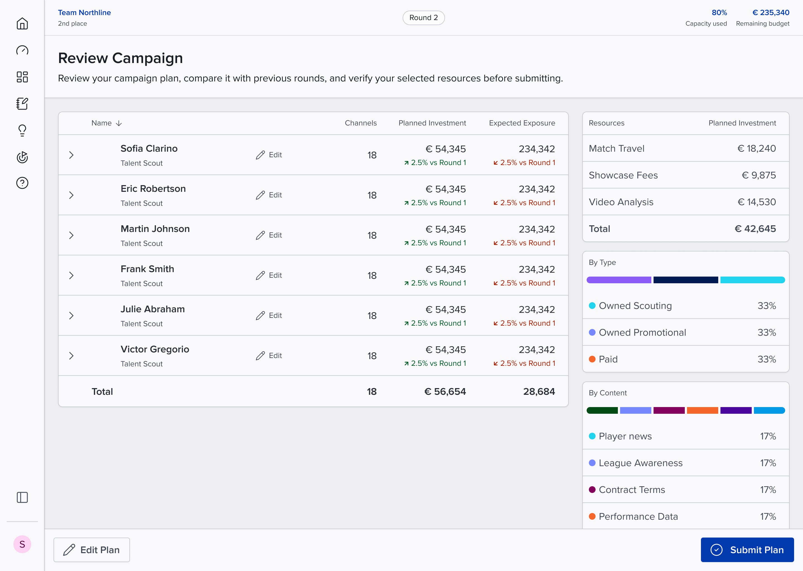

Campaign Sim
Learning campaign planning within a real set of constraints.
- Role
- Design lead
- Studio and dates
- Blueshift · 2025
- Scope
- Planning tool · Simulation UX
I led design of the planning and simulation experience. Channel choices stay beside the scout’s preferences and the team’s budget, then come together in a review that connects each round’s expected results to the decisions behind them.
Client: Sports representation (NDA). Domain and data changed under NDA; the design problem and role are retained.


